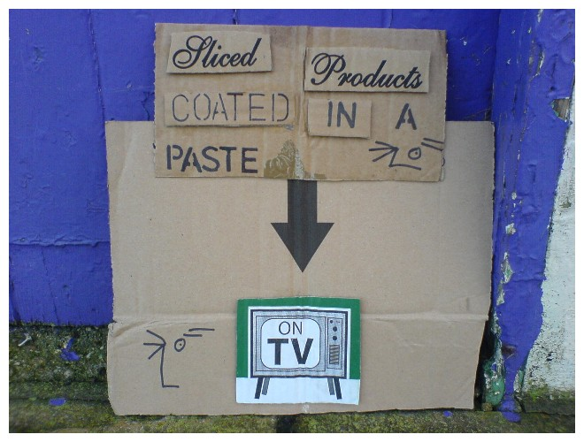

Saturday, December the 24th, 2011
back to: title, date or indexes
It occurred to me that no Advent Calendar for 2011 would be complete without one of Outa_Spaceman's pieces of cardboard signage. I chose this one, number 356, for the simple reason that it filled me with unalloyed glee. But you might have a different favourite, and as it is Christmas Eve, I think I will give you a treat. You can choose any one of the 357 signs currently in the cardboard archive, print it out, cut around the edges, and paste it to your sheet of advent calendar cardboard with glue. Please leave a comment under the appropriate postage at Outa_Spaceman's Inexplicable World so he can keep a tally. He may not wish to keep a tally, but let us at least give him the opportunity to do so.
